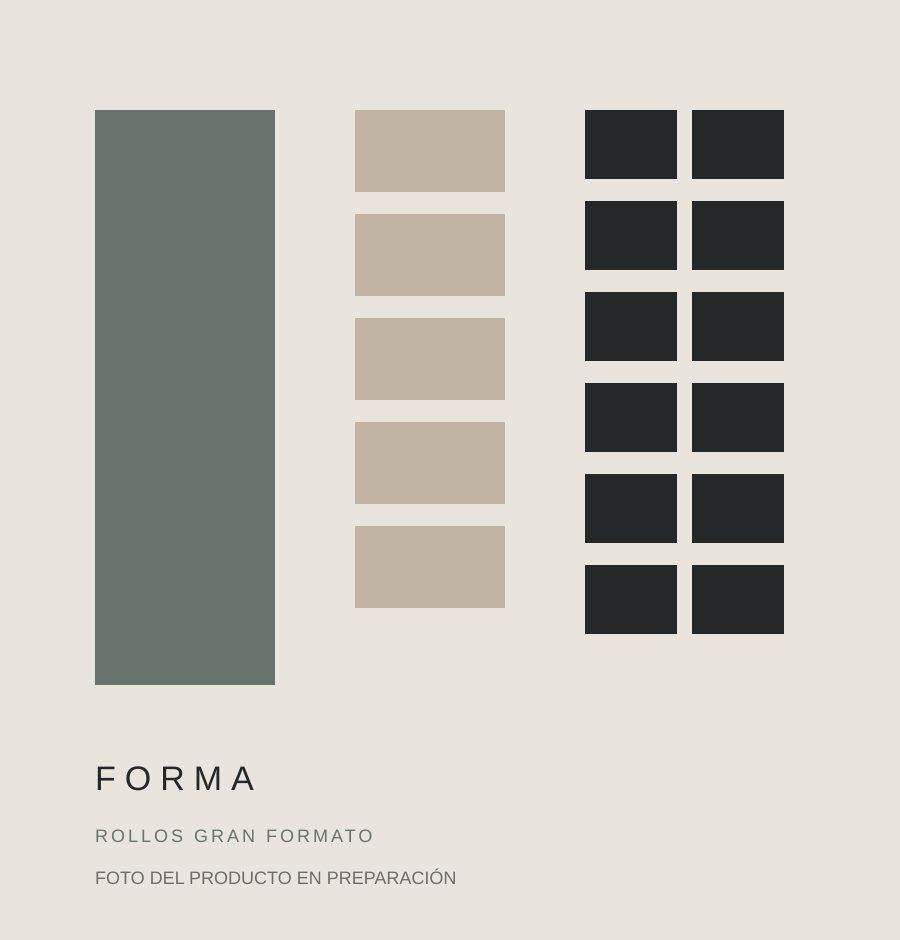

PendienteRollos gran formato · PUERTO MADRYN
Smil Marmol Blanco / Negro
Revestimientos continuos de gran formato para reducir juntas y acelerar la colocación.
- Formato
- 120 x 3 mts
- Disponibilidad
- Sujeta a confirmación
- Presentación
- Caja de 12 unidades
Disponibilidad: Consultar
Precio y disponibilidadConsultar precio
Consultar por WhatsAppConfirmamos precio, disponibilidad y entrega antes de cerrar el pedido.